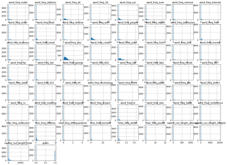
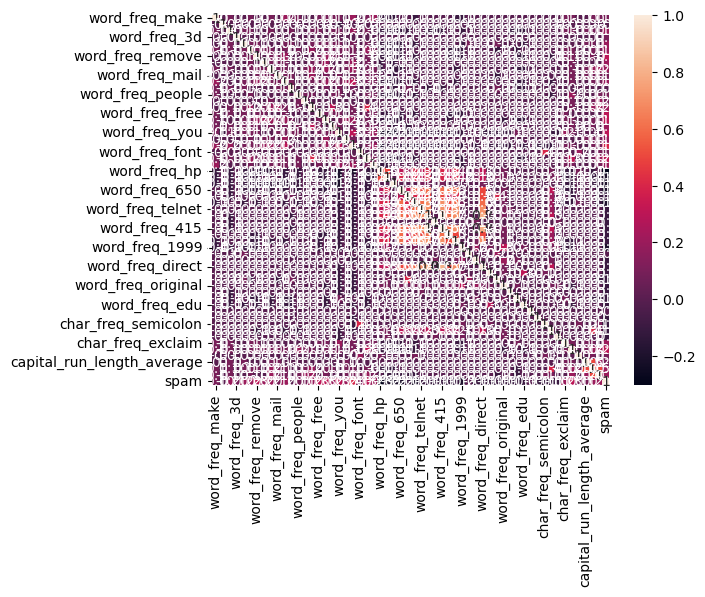
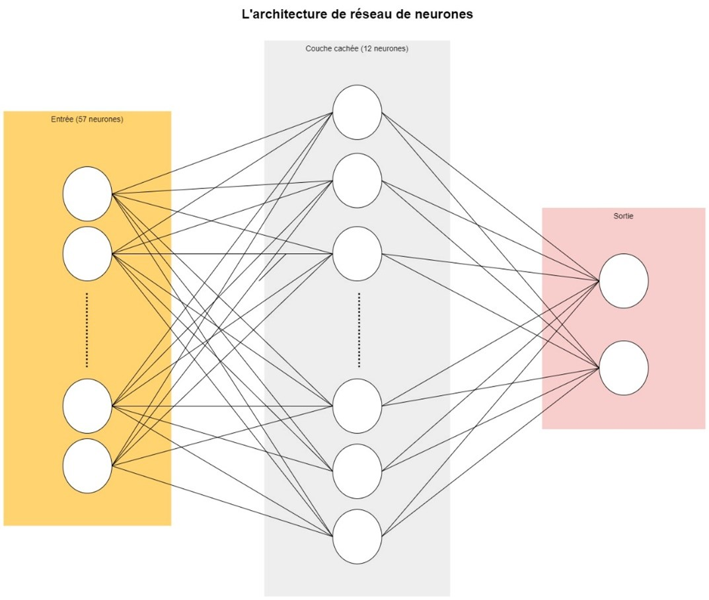
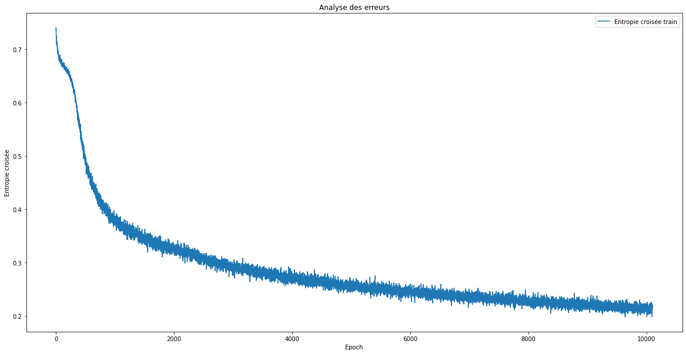
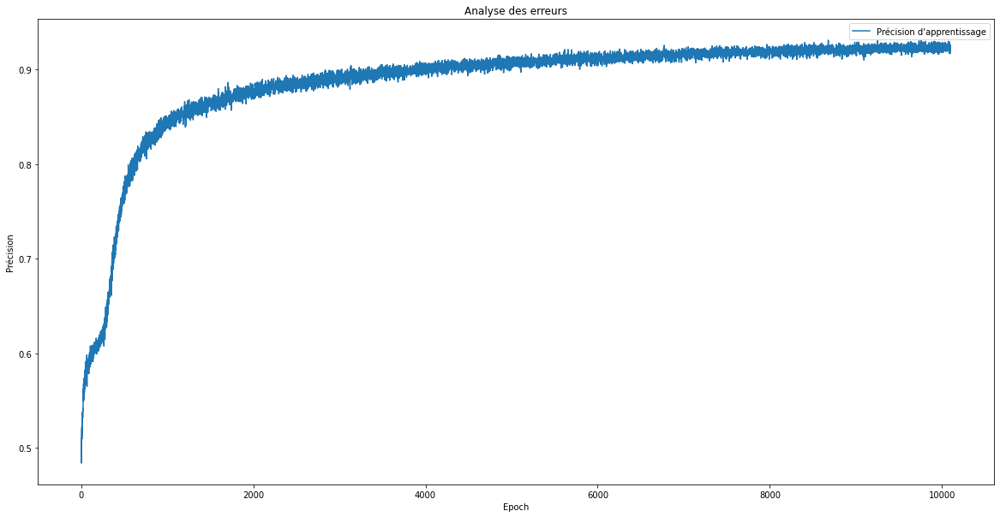

Spam dataset
Introduction¶
L’objectif de ce projet était d’entraîner un réseau neuronal à classer les courriels comme « spam » ou « non spam ». Ceci a été fait sur le jeu de données Spambase fourni par le référentiel d’apprentissage automatique de l’UCI, qui contient 57 features représentant la fréquence des mots dans 4601 emails.
Pour notre label (Spam) ; « spam » a été codé comme 1 pour la classe positive et « non spam » a été a été codé comme 0 pour la classe négative.
Préparation des données¶
# Importer les bibliothèques
import pandas as pd
import numpy as np
import matplotlib.pyplot as plt
import seaborn as sns
from tensorflow import keras
import tensorflow as tf
from tensorflow.keras.models import Sequential
from tensorflow.keras.layers import Dropout
from sklearn.metrics import accuracy_score
from tensorflow.keras.layers import Dense
Étude exploratoire des données¶
D’après le résultat de la méthode « info() », il apparaît que tous les features sont de type float ce qui facilitera notre étude ultérieure (pas besoin de faire une feature engineering). J’ai également fait une analyse des distributions des données pour avoir une idée sur les lois suivies par les différents features, ainsi veuillez trouver ci-dessous le résultat obtenu et qui montre que la plupart des features ne suivent pas une distribution gaussienne.Output

# Analyse des corrélations
matriceCorr = spam.corr().round(1)
sns.heatmap(data=matriceCorr, annot = True)
Output

Implémentation d’un modèle de réseau de neurones¶
# Division de données en données d'entrainement, du test et de validation
spam = spam.sample(frac=1, axis=0)
data_train_valid = spam.sample(frac=0.85, axis=0)
data_test = spam.drop(data_train_valid.index)
data_train = data_train_valid.sample(frac=0.8, axis=0)
data_valid = data_train_valid.drop(data_train.index)
x_train = data_train.drop('spam', axis=1)
y_train = data_train['spam']
print('Dimensions de X train :', x_train.shape)
print('Dimensions de Y train :', y_train.shape)
x_valid = data_valid.drop('spam', axis=1)
y_valid = data_valid['spam']
print('Dimensions de X valid :', x_valid.shape)
print('Dimensions de Y valid :', y_valid.shape)
x_test = data_test.drop('spam', axis=1)
y_test = data_test['spam']
print('Dimensions de X test :', x_test.shape)
print('Dimensions de Y test :', y_test.shape)
# Normalisation des données
min_x_train = x_train.min()
max_x_train = x_train.max()
print("Min de x_train :", min_x_train)
print("Max de x_train :", max_x_train)
x_train_norm = (x_train-min_x_train)/(max_x_train-min_x_train)
x_test_norm = (x_test-min_x_train)/(max_x_train-min_x_train)
x_val_norm = (x_valid-min_x_train)/(max_x_train-min_x_train)
La fonction sigmoïde a été choisie comme fonction d’activation pour chacune des trois couches, l’entropie croisée binaire comme loss function, et l’algorithme Adam optimizer pour son adaptative learning rate and momentum.

## Implémentation de modèle DNN
model = Sequential()
model.add(Dense(57, input_dim=np.shape(x_train)[1], activation = 'sigmoid'))
model.add(Dropout(.5))
model.add(Dense(12, activation = 'sigmoid'))
model.add(Dropout(.5))
model.add(Dense(1, activation = 'sigmoid'))
model.compile(loss = 'binary_crossentropy', optimizer = 'adam', metrics=['accuracy'])
model.summary()
callback = tf.keras.callbacks.EarlyStopping(monitor='loss', patience=1000)
hist = model.fit(x_train_norm, y_train, epochs = 10100, batch_size = 99999, callbacks = callback)
# Performance du modèle sur les données du test
preds = model.predict(x_test_norm)
preds = [1 if x[0] > 0.5 else 0 for x in preds]
score_test_dnn = accuracy_score(y_test, preds)
print(score_test_dnn)
# Performance du modèle sur les données de validation
preds = model.predict(x_val_norm)
preds = [1 if x[0] > 0.5 else 0 for x in preds]
score_valid_dnn = accuracy_score(y_valid, preds)
print(score_valid_dnn)
figure = plt.gcf()
figure.set_size_inches((20, 10))
plt.title('Analyse des erreurs')
plt.xlabel('Epoch')
plt.ylabel('Entropie croisée')
plt.plot(range(1, len(hist.history['loss']) + 1), hist.history['loss'])
plt.legend(['Entropie croisée train'])
plt.show()
Output

figure = plt.gcf()
figure.set_size_inches((20, 10))
plt.title('Analyse des erreurs')
plt.xlabel('Epoch')
plt.ylabel('Précision')
plt.plot(range(1, len(hist.history['accuracy']) + 1), hist.history['accuracy'])
plt.legend(["Précision d'apprentissage"])
plt.show()
Output

Ce modèle de réseau neuronal a donné un score de 0,924 pour les données de test et un score de 0,937 pour les données de validation, ce qui est très satisfaisant.
Implémentation d’une Régression Logistique¶
from sklearn.linear_model import LogisticRegression
log_reg = LogisticRegression()
log_reg.fit(x_train_norm, y_train)
# Performance du modèle sur les données du test
score_test_log_reg = log_reg.score(x_test_norm, y_test)
print("Test Accuracy Score", score_test_log_reg)
# Performance du modèle sur les données de validation
score_valid_log_reg = log_reg.score(x_val_norm, y_valid)
print("Test Accuracy Score", score_valid_log_reg)
Implémentation d’un SVM¶
# Performance du modèle sur les données du test
score_test_svc = svm.score(x_test_norm, y_test)
print("Test Accuracy Score", score_test_svc)
# Performance du modèle sur les données de validation
score_valid_svc = svm.score(x_val_norm, y_valid)
print("Test Accuracy Score", score_valid_svc)
Implémentation d’un Random Forest¶
from sklearn.ensemble import RandomForestClassifier
rdf = RandomForestClassifier(max_depth=2, random_state=0)
rdf.fit(x_train_norm, y_train)
# Performance du modèle sur les données du test
score_test_rdf = rdf.score(x_test_norm, y_test)
print("Test Accuracy Score", score_test_rdf)
# Performance du modèle sur les données de validation
score_valid_rdf = rdf.score(x_val_norm, y_valid)
print("Test Accuracy Score", score_valid_rdf)
Conclusion¶
Pour conclure, voici un tableau qui résume les différents scores de tous les modèles que j’ai mis en place :
| Modèle | Score (test dataset) | Score (validation dataset) |
|---|---|---|
| Réseau de neurones (DNN) | 0.9246376811594202 | 0.9246376811594202 |
| Régression Logistique | 0.8768115942028986 | 0.8951406649616368 |
| SVM (SVC) | 0.9318840579710145 | 0.9322250639386189 |
| Random Forest | 0.8840579710144928 | 0.9040920716112532 |